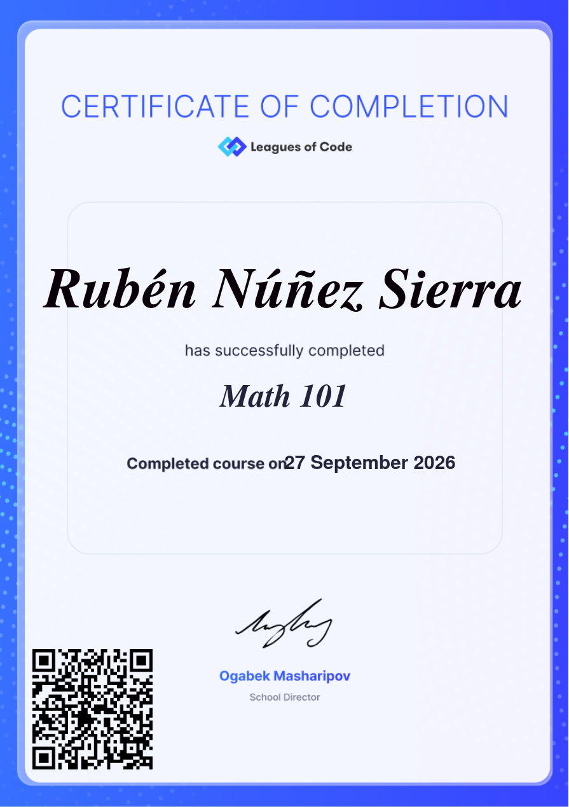

Sigscan
01Escáner forense de firmas mágicas en Go: detecta JPEG/PNG/ELF embebidos y los puede tallar a disco. Solo stdlib, binario estático.
- Go
- Forense
- Binario
- CLI
Sistemas Inteligencia artificial Ciberseguridad
Construyo software que observa,
registra y explica sistemas vivos.
Desarrollador de software centrado en Linux, inteligencia artificial y ciberseguridad.Diseño herramientas de línea de comandos y TUI que miden lo que normalmente pasa desapercibido — el entorno inalámbrico, los dispositivos Bluetooth, la vida de los procesos — y lo dejan registrado para poder estudiarlo con calma.
Perfil
Soy desarrollador autodidacta. Mi forma de entender la tecnología es práctica: tomar un sistema, abrirlo, romperlo y volver a montarlo hasta que el comportamiento tiene sentido.
Ese método se convirtió en una colección de herramientas centradas en observar lo que normalmente pasa desapercibido — el entorno inalámbrico, los dispositivos Bluetooth, la vida de los procesos — y en registrarlo para poder estudiarlo con calma.
El mismo enfoque lo aplico a la inteligencia artificial y a la ciberseguridad: una red neuronal modular construida desde cero, herramientas de análisis defensivo sobre logs, reconocimiento de activos autorizados y utilidades forenses que leen la estructura real de los ficheros.
Entre proyecto y proyecto también edito vídeo y produzco audio. El código y la creatividad digital no son mundos separados para mí.
Aprendo rompiendo sistemas, analizándolos y reconstruyéndolos.
La curiosidad es el motor de todo lo que creo.
Demostraciones interactivas
Modelos computacionales deterministas reconstruidos desde el código fuente de mis proyectos. Cambia parámetros, observa los cálculos y explora la arquitectura.
Trabajo seleccionado
Una selección de las herramientas que mantengo públicamente en GitHub. Cada una nace de un problema propio y llega hasta el final: release, documentación y pruebas.
Escáner forense de firmas mágicas en Go: detecta JPEG/PNG/ELF embebidos y los puede tallar a disco. Solo stdlib, binario estático.
Cliente DNS que construye los paquetes RFC 1035 a mano con struct: punteros de compresión, fallback TCP en truncados, 7 tipos de registro. La caja transparente donde se ve el cable.
CPU de 8 bits construida desde cero en Rust: ISA propia, ensamblador, desensamblador, VM determinista y pantalla virtual de 32×32. Cero dependencias.
Compilador en Rust que traduce un lenguaje de tipo u8 a ensamblador SILICON, la CPU de 8 bits de silicon: variables en memoria, ALU sobre el acumulador, saltos por banderas, print_num con división por restas y pruebas end-to-end sobre la VM real.
Broker de mensajería pub/sub en C++17 sin dependencias: protocolo binario propio con cabecera de 13 bytes, delimitación por longitud y CRC-32, reenvío ordenado con un solo hilo sobre poll(2), colas acotadas con backpressure y cliente CLI para publicar y escuchar temas.
Almacén content-addressable de solo-append escrito en C puro: formato binario propio con CRC32 + SHA-256, deduplicación por contenido y recuperación automática ante corrupción o truncamiento.
Endless runner arcade en un solo HTML: física y colisiones propias, chiptune generado con WebAudio (cero assets), partículas y récord local. Juegable desde el portafolio.
Dos reproductores, una idea: música que se opera. App Android estilo iPod con click-wheel háptico (Compose) que reproduce música local y busca en YouTube Music; y una consola web hi-fi vintage sin dependencias.
Dashboard TUI de sistema en curses puro — cero dependencias. CPU por núcleo, memoria, tasas de red y top procesos leídos directamente de /proc con parsers hechos a mano.
Deck offline de utilidades pentest en un solo HTML (~15 KB): base64, hex, JWT, SHA-1/256/512, XOR, César, UUID. Cero red, cero telemetría — todo corre en tu navegador.
Canary tokens autoalojados: claves AWS falsas, .env señuelo y web bugs que disparan un webhook en el instante en que alguien los toca. Solo stdlib, tus logs nunca salen de tu VPS.
SIEM de bolsillo: detecta fuerza bruta SSH, enumeración de usuarios, escaneos web y picos de error directamente en tus logs — cero dependencias, 100% offline, informe HTML.
Multi-tool de reconocimiento para activos autorizados: subdominios vía CT logs, escáner de puertos asíncrono y dir busting — todo en sesiones SQLite con informe HTML unificado.
Una máquina del tiempo para tu entorno inalámbrico: captura el espectro Wi-Fi periódicamente, guárdalo en SQLite y reprodúcelo después para ver cómo cambió tu red a lo largo del tiempo.
Radar Bluetooth en tiempo real: dispositivos BLE cercanos, niveles de señal RSSI, historial y reproducción de sesiones grabadas.
El libro mayor de tu máquina Linux: fotografía periódica de paquetes, servicios y parámetros del kernel en SQLite, y diffs entre dos instantes para saber qué cambió y cuándo.
Un historiador de puertos de red para Linux: registra quién escuchó dónde y cuándo en una bitácora SQLite local, para que puedas preguntar qué pasó mientras no mirabas.
Convierte la actividad del sistema en un ecosistema vivo: procesos, recursos y cambios de estado en tiempo real desde la terminal.
Arquitectura de red neuronal construida desde cero en Python junto a un colaborador, extensible mediante plugins.
En desarrollo: automatización de tareas digitales y flujos de trabajo propios.
Scripts y herramientas pequeñas que resuelven fricciones diarias en mi escritorio Linux.
Producciones con más de 20.000 visualizaciones entre CapCut y DaVinci Resolve.
Exploración de herramientas de ciberseguridad en entornos controlados.
Capacidades
Certificaciones
La matemática da el razonamiento y Python da el lenguaje. Todo lo demás que hay en esta página se apoya en esas dos columnas.

Fundamentos matemáticos: álgebra, funciones y lógica. Es la base para razonar sobre algoritmos, medir complejidad y entender lo que ocurre bajo el capó de la criptografía.
Introducción a la programación en Python: sintaxis, variables, estructuras de control, funciones y tipos. El primer lenguaje con el que empezó todo lo que hay aquí.